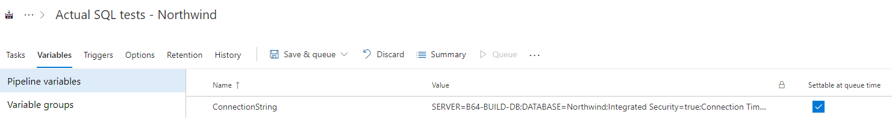

DBConfirm - Documentation
Continuous Integration
DBConfirm tests are integrated with existing test frameworks, so tests will be run by any Continuous Integration (CI) build that can run tests in that framework.
The only different between a standard unit test suite and a DBConfirm test suite is that DBConfirm requires an actual database to test against, so this database needs to be accessible by the build agent.
There are 3 ways to configure the connection string used by the tests, which are checked in this order:
Configure using Environment Variables
This is the recommended approach to configuring the CI build.
During the test initialisation, the current environment variables are checked for a variable called 'ConnectionString', and if a value is found, this connection string is used.
To set this environment variable, see the configuration for the CI build itself.
For example, in Azure DevOps, the environment variables are listed as 'Variables':

Configure using a .runsettings file
During test initialisation, if no environment variable is found, DBConfirm will next check for a .runsettings file.
If a .runsettings file is found, a parameter called 'ConnectionString' is checked, and used if found.
An example .runsettings file is:
<?xml version="1.0" encoding="utf-8"?>
<RunSettings>
<TestRunParameters>
<Parameter name="ConnectionString" value="SERVER=B64-BUILD-DB;DATABASE=Northwind;Integrated Security=true;Connection Timeout=30;" />
</TestRunParameters>
</RunSettings>
Configure using appsettings.json
This method is recommended for local development and testing, but since it can't easily be changed as part of a CI build, it should only be used as a last resort for builds.
During test initialisation, if no environment variable or .runsettings variable is found, then the appsettings.json file is checked for a connection string with a name of 'TestDatabase'.
An example appsettings.json file is:
{
"ConnectionStrings": {
"TestDatabase": "SERVER=(local);DATABASE=SampleDB;Integrated Security=true;Connection Timeout=30;"
}
}